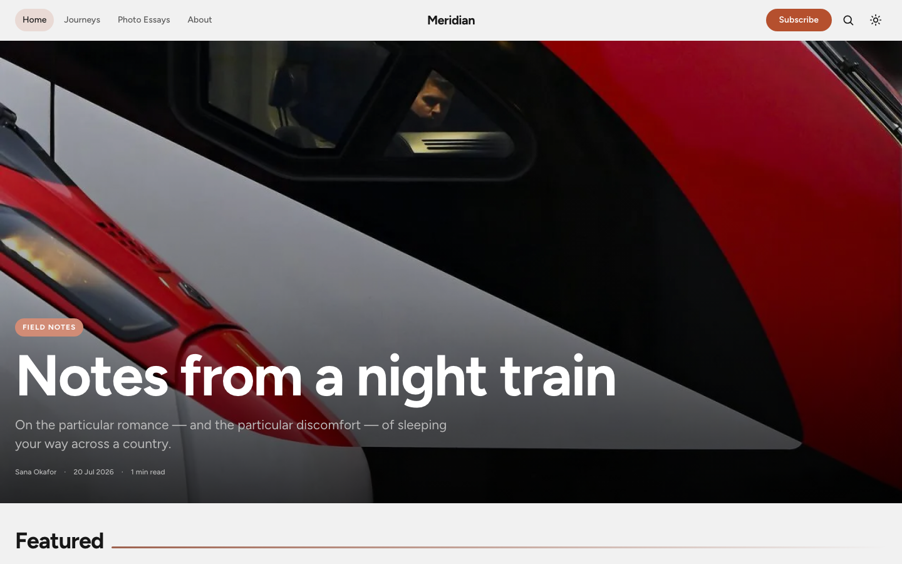
Travel & photography
Meridian
Slow, first-person dispatches from specific places, photo-led. Shows the theme at its most image-forward.
Astrix Ghost Theme is a bold, image-led theme for Ghost CMS — four live demo publications, four hero styles, three feed layouts, native dark mode, membership, and a reading experience that gets out of the way.
Astrix ships one set of components. Change the hero style, feed layout, and accent colour in Ghost Admin, and the same open-source Ghost theme becomes a travel journal, a design magazine, a food publication, or a personal blog.

Slow, first-person dispatches from specific places, photo-led. Shows the theme at its most image-forward.
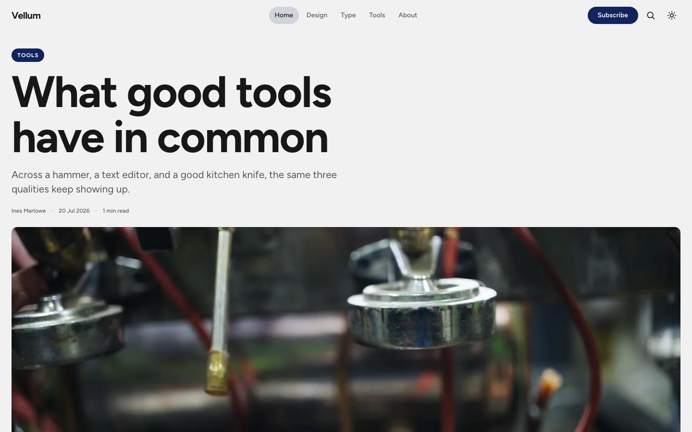
A type-forward journal on design and the craft of making things. Restrained, editorial, opinionated.
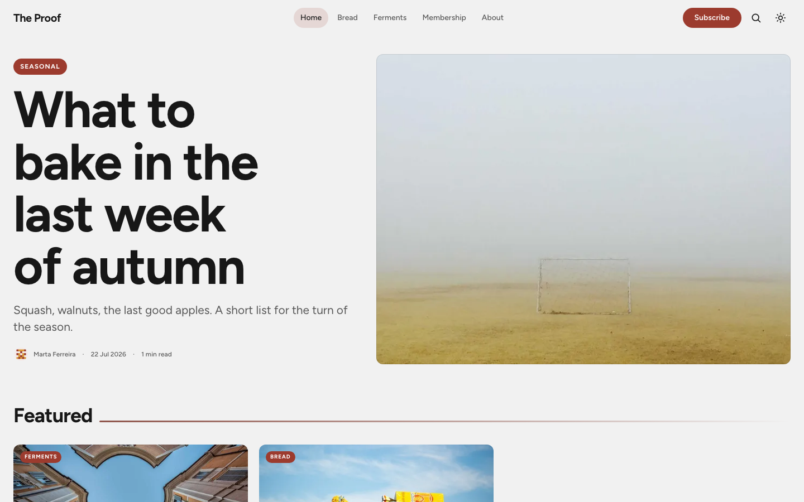
Recipes and essays from a small corner bakery — with paid membership, gated recipes, and a pricing page.
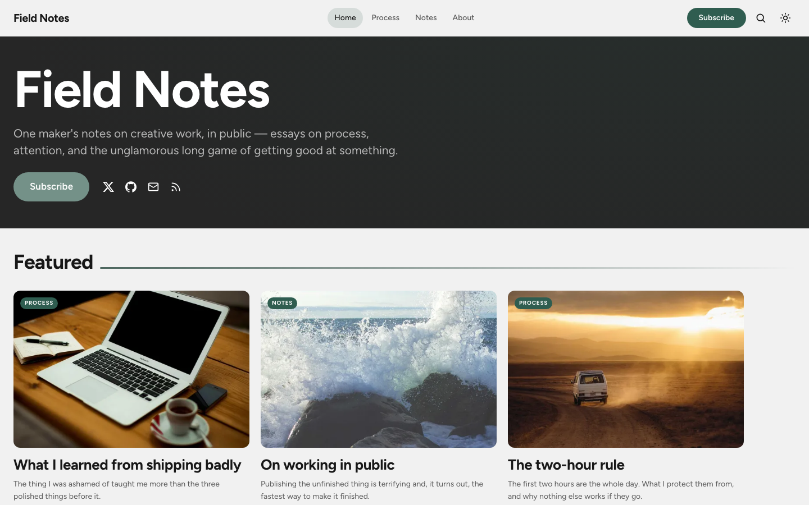
One maker's notes on creative work. The Personal hero puts the author front and centre, with a supporter tier.
The homepage opens in one of four ways, selectable in Ghost Admin → Design. Poster and Editorial lead with the latest featured post; Split balances image and text; Personal opens with the author.
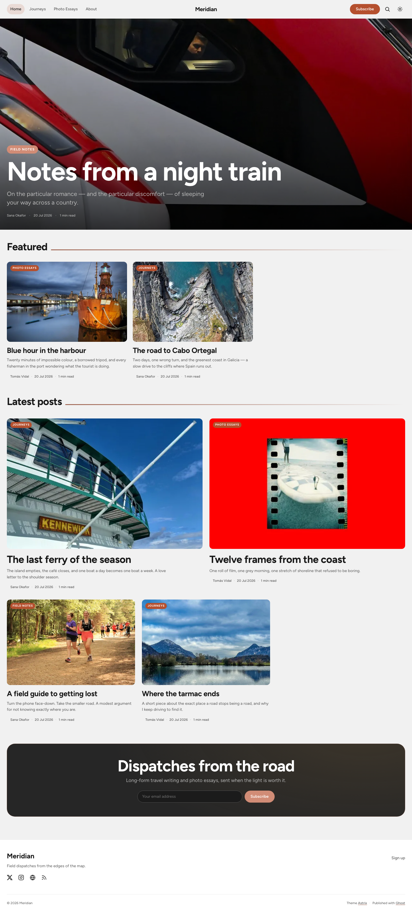
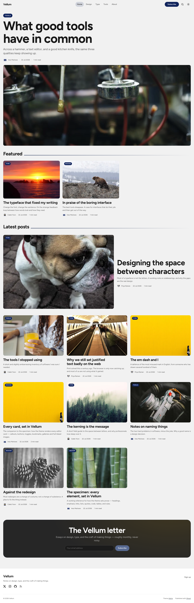
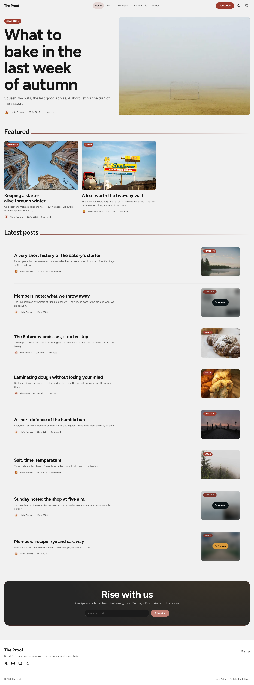
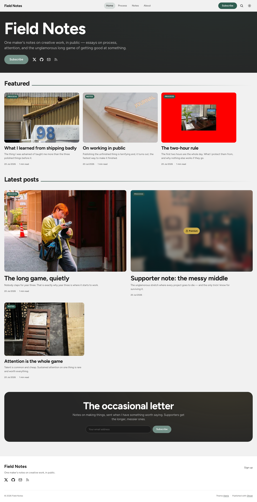
Mosaic, Bold grid, and List — plus a native light / dark / system colour scheme with a zero-flash toggle, driven by light-dark(). Every accent stays readable in both schemes.
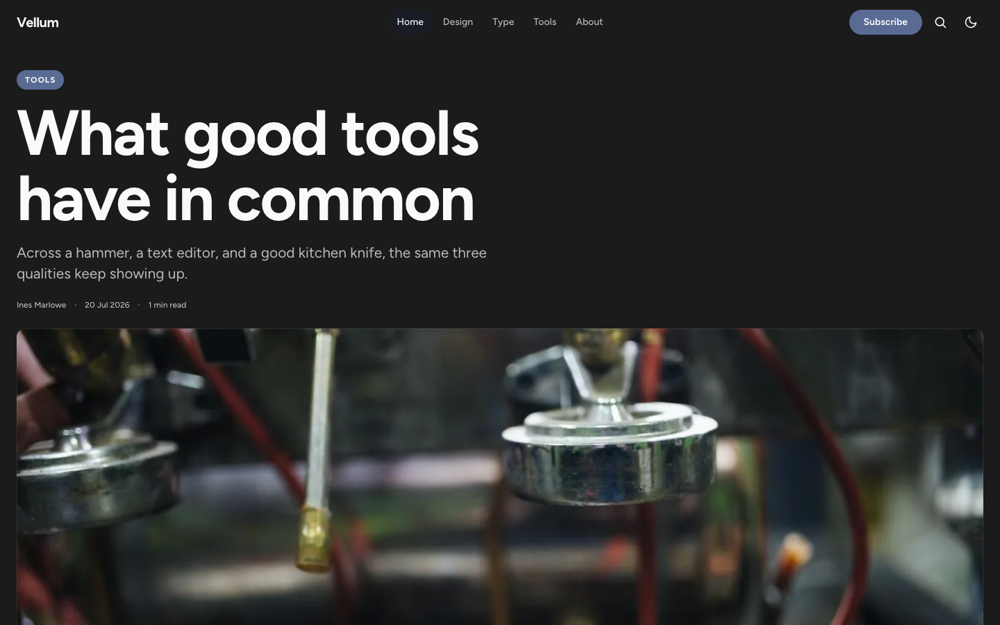
A sticky table of contents with a reading-line scrollspy, a reading progress bar, related posts, and a reading-scale prose measure — with fully styled headings, lists, quotes, code, and tables.
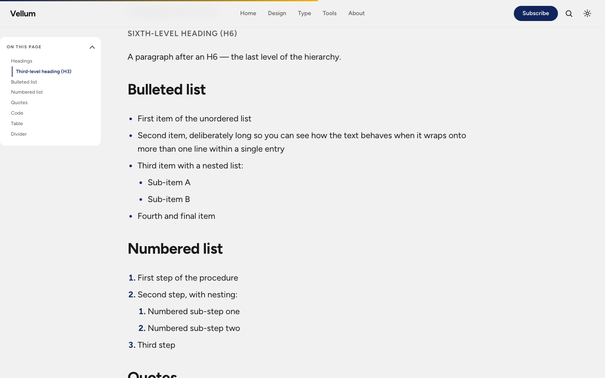
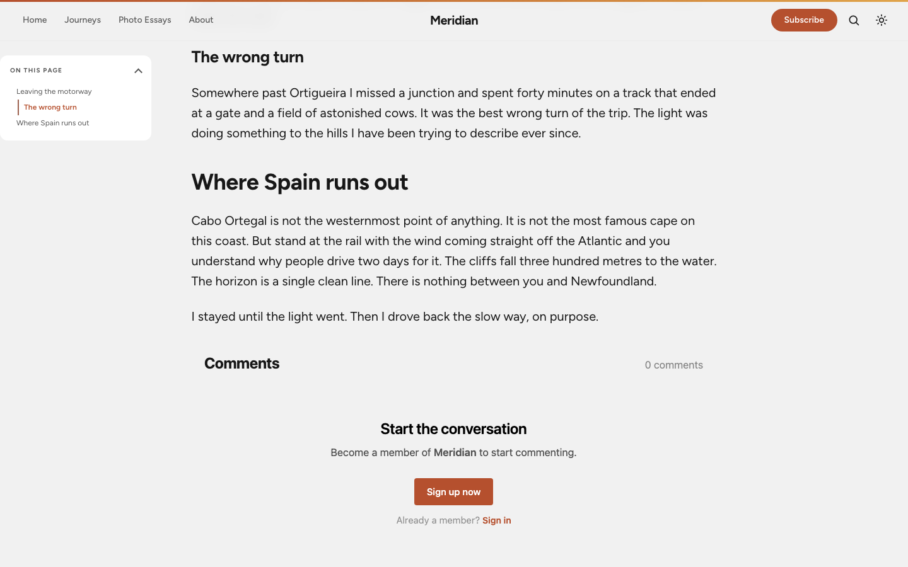
Callouts in every colour, buttons, toggles, bookmarks, galleries, and images at three widths — standard, wide and full-bleed. The demo ships a page that exercises all of them, so nothing renders as an afterthought.
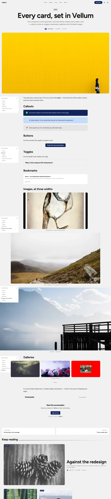
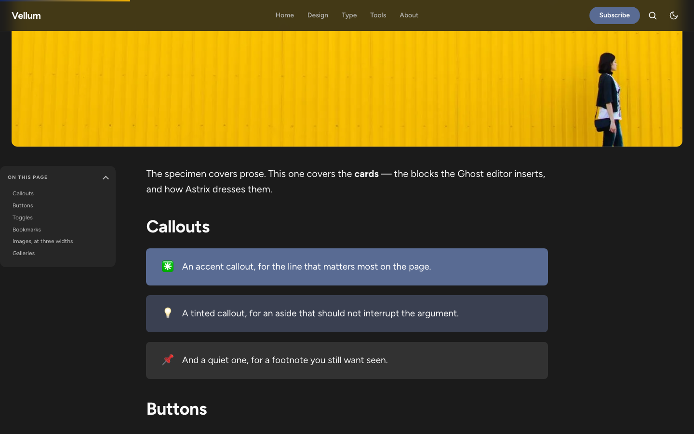
Portal integration, subscribe forms, a custom-membership pricing page, and tier-aware gates for members-only and paid content.
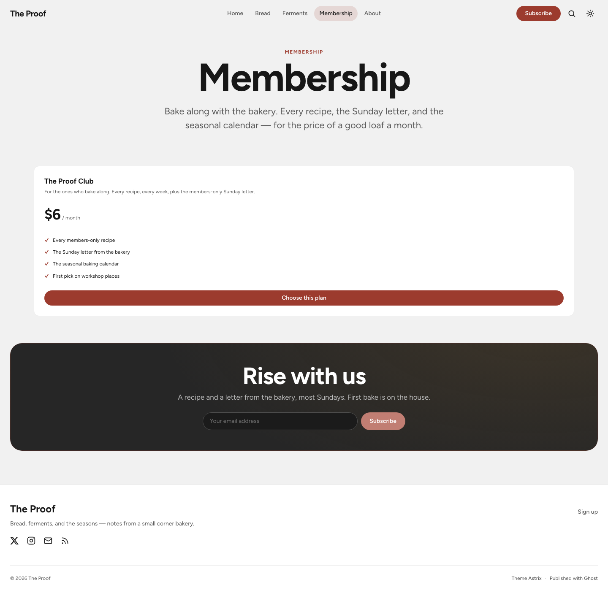
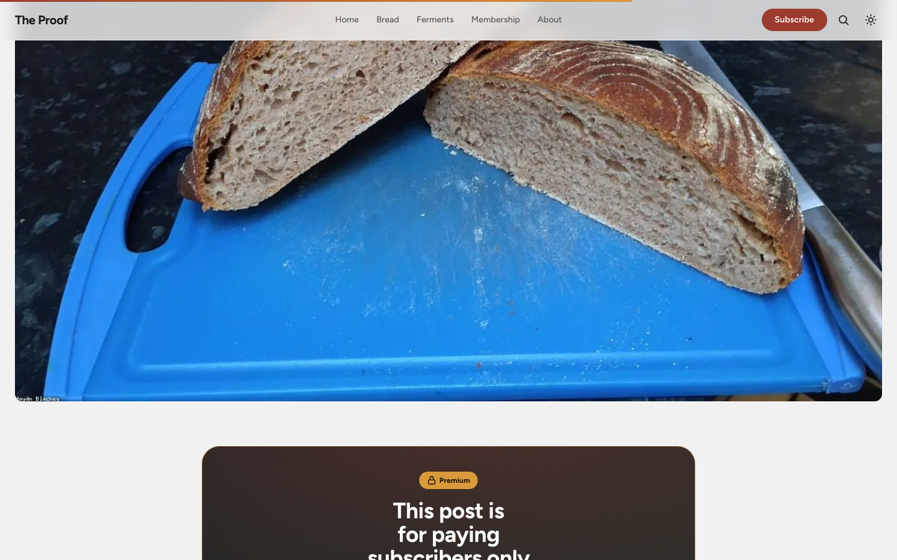
Every layout is built mobile-first: thumb-friendly navigation, 44px touch targets, and full-bleed imagery that holds up on a small screen.
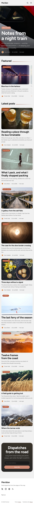
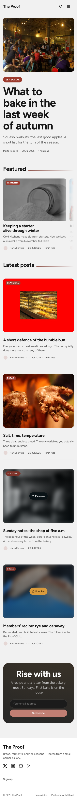
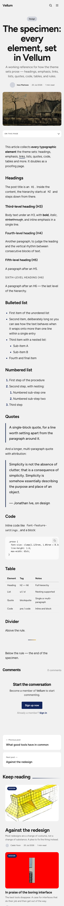
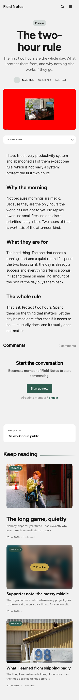
The Ghost Admin accent is derived into fill, ink, and line tokens so it stays legible on both light and dark.
Built on the Astryx design tokens (colour, spacing, radius, motion, type) — no hard-coded values.
sodo-search wired in, plus fully styled Koenig cards: callouts, bookmarks, galleries, toggles, products.
English and Italian locales ship in the box; every UI string goes through {{t}}.
Ghost Admin custom fonts are honoured; Figtree is self-hosted with a zero-CLS fallback.
WebP imagery, lazy-loading, content-visibility, WCAG-minded contrast, focus states, and reduced-motion support.
All configurable from Ghost Admin → Design — no code required.
| Setting | Options | Default |
|---|---|---|
| Header style | Editorial / Poster / Split / Personal | Poster |
| Feed layout | Bold grid / Mosaic / List | Bold grid |
| Colour scheme default | System / Light / Dark | System |
| Navigation layout | Logo left / Logo middle | Left |
| Secondary accent | colour | #f5b301 |
| Personal hero headline / text / portrait | free text / image | empty |
| Show author meta | on / off | on |
| Featured slider | on / off | on |
| Table of contents | on / off | on |
| Reading progress | on / off | on |
| Related posts | on / off | on |
| CTA headline / text | free text | built-in copy |
| Social: GitHub / Hugging Face / email / extra URL | text | empty |
astrix.zip from the latest release.